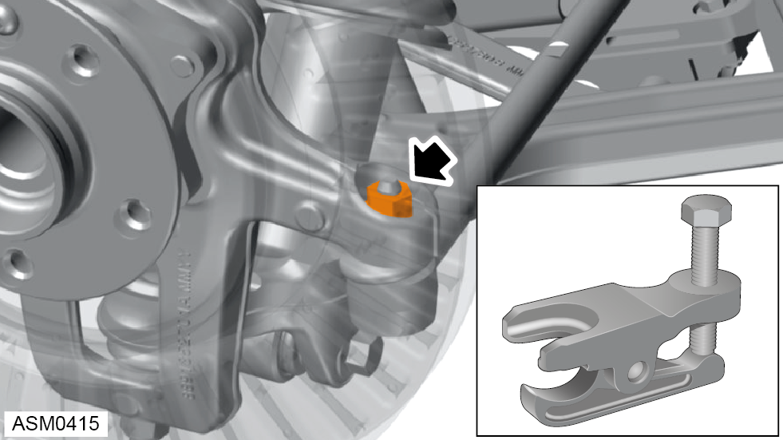

Track Rod End - Left Side
Print
Operation Code: 32.03.17-02
Removal
- Remove road wheel - front - left side. Refer to procedure.
- Record position of nut on steering rack threads.
NOTE: Recording nut position will assist installation and set up of wheel alignment.
- Loosen nut securing left side track rod end to steering rack. Torque 45 Nm.
NOTE: Only loosen nut enough to remove track rod end.

- Loosen but do not fully remove nut securing left side track rod end ball joint to hub carrier.
NOTE: Loosen the ball joint nut until the locking threads are clear of the ball joint pin threads.
- Use ball joint splitter to separate left side track rod end from hub carrier.
- Remove and discard nut securing left side track rod end ball joint to hub carrier. Torque 45 Nm.
- Unwind left side track rod end from steering rack and remove.
Installation
- Installation is the reverse of removal procedure except for the following:
- Install track rod end to previously recorded position of nut on steering rack.
- Renew all discarded fixings that have been removed during removal procedure.
- Perform a front steering and suspension geometry inspection and adjustment. Refer to procedure.